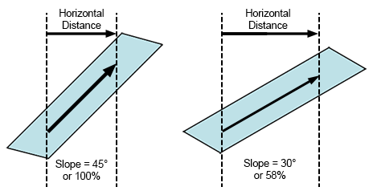
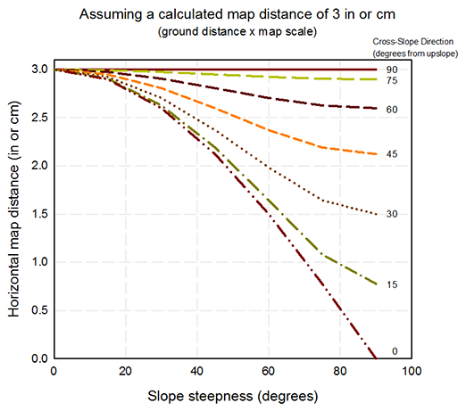

|
Slope vs Horizontal Map Distance Tool |
Map distance is found by multiplying slope distance (distance along the ground) by the map scale. This result is then plotted on a map as a horizontal distance (assuming flat ground). This is not technically correct. Because of the many variables that exist in the real world, the difference between slope distance and horizontal distance is not critical in fire behavior modeling, and we often ignore it. We include this tool for the conversion in case you want to make the correction before you plot a distance on a map for areas with very steep slopes or when plotting results over long distances.
This diagram illustrates the difference between slope distance and horizontal distance for 45- and 30-degrees slopes. The slope distance in both cases is the same.
|  |
When you select the option Display output distances in map units from the Module Selection dialog, the following slope distances (the distance along the ground) are converted to map distances (horizontal distances).
This graph shows the horizontal map distance based on the calculated map distance, the maximum slope steepness, and the direction of the distance with respect to upslope. This example is for a calculated map distance of either 3 in or 3 cm (correction is not dependent on the units used). The largest difference is for very steep slopes and for distances that are along the steepest part of the slope.
|  |